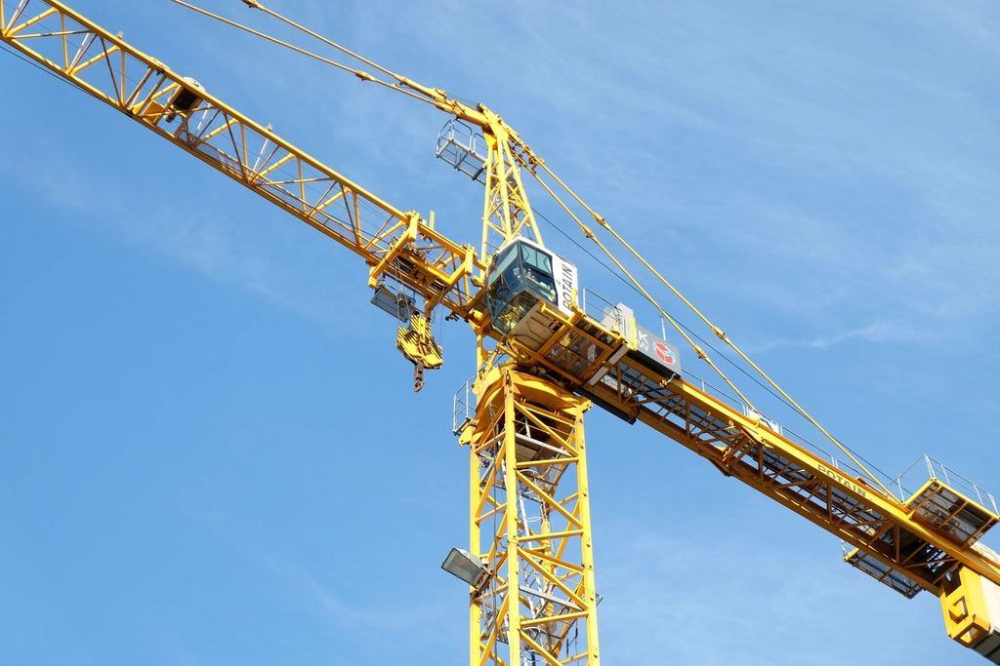

Liftar
Vår specialitet är de svåra platserna: innergårdar i Linnéstaden, kyrkor med känsliga golv, trädgårdar bakom smala grindar och atrium i köpcentrum. Våra larvburna spindelliftar väger från 1,9 ton, går genom 80 centimeters öppningar och når 33 meter.
Hur högt och hur trångt?

Spindelliftar för trånga platser
Våra 34 spindelliftar står på larvband under transport och stödben när de arbetar. De klarar lutningar på 30 procent, ställer upp på trappsteg och lämnar inga spår i gräset tack vare markskyddsplattor.
Den största når 33 meter och har 15 meters utlägg – tillräckligt för att nå över ett tvåvåningshus till takfoten på baksidan.

Saxliftar inomhus
Eldrivna saxliftar med icke-märkande hjul för butiker, lager och kontor. De smalaste är 76 centimeter breda och går genom en vanlig dörr.
Batterierna laddas fulla före leverans och räcker en hel arbetsdag i normal drift.

Bomliftar för fasad och industri
Teleskop- och ledbomliftar från 16 till 43 meter, varav tolv hybrider som kan köra på el inomhus och diesel ute. Vi levererar med egen lastbil och visar liften på plats.
För fasadjobb längs gata hjälper vi till med ansökan om markupplåtelse hos Trafikkontoret.

Släpliftar för villaägare
Sex släpvagnsliftar för dig som ska måla fönster, rensa hängrännor eller beskära ett träd. De väger under 1 500 kilo och dras av en vanlig personbil med B96-behörighet.
Vid första hyran får du en halvtimmes genomgång på depån och en checklista att ha med.
Från bild på grinden till lift på plats
- 1

Beskriv platsen
Ring eller skicka bilder på grinden, marken och höjden. Vi svarar med förslag på lift samma dag.
- 2

Vi mäter upp
Vid trånga platser kommer en uthyrare ut med måttband och lutningsmätare – kostnadsfritt.
- 3

Leverans och genomgång
Liften levereras före klockan sju och chauffören visar nödsänkning och reglage.
- 4

Vi hämtar
Ring när du är klar. Vi hämtar samma eftermiddag och debiterar per påbörjat dygn.
Kontrollerat, utbildat och försäkrat
- IPAF-certifierat utbildningscenterVi utbildar liftförare enligt IPAF och Arbetsmiljöverkets krav för mobila arbetsplattformar.
- Årlig besiktningAlla 160 liftar besiktas av ackrediterat kontrollorgan, och protokollet finns i liftens dokumentlåda.
- Fallskydd ingårSelar och kopplingslinor kontrolleras efter varje hyra och följer med alla bomliftar och spindelliftar.
- KollektivavtalAnställda har kollektivavtal med IF Metall, och chaufförerna har yrkeskompetensbevis.